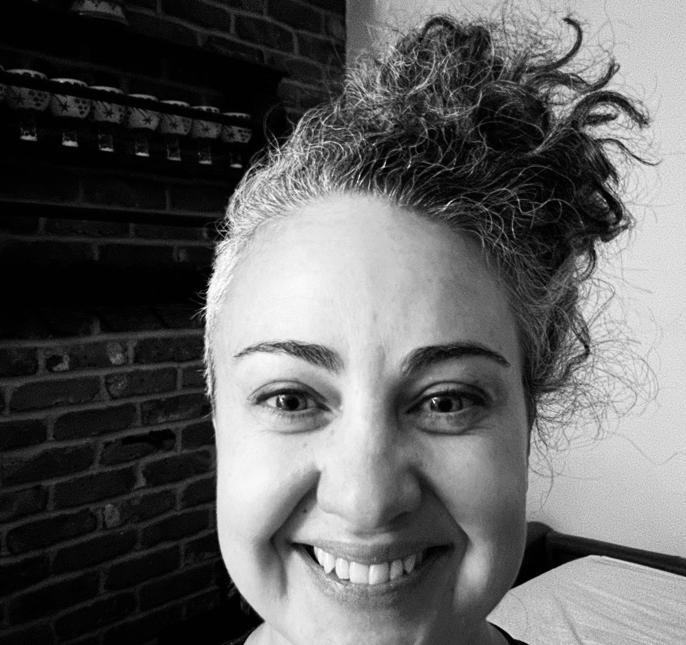

A 2.5-day all-inclusive residential clinical immersive for nervous system regulation, microcirculation optimization, structural integration, and embodied renewal.
There is a lot moving through life right now — uncertainty, pressure, change, responsibility, and the constant demand to keep adapting.
Many people have learned to hold too much for too long. This weekend creates space to begin sensing what is truly yours to carry, what needs to be processed, and what your system is ready to release.
In moments like this, your capacity matters. Your clarity matters. Your energy matters. Your nervous system matters. Your ability to stay connected to yourself matters.
Your body is not a problem to fix. It is the system that determines what you can access, sustain, and create.
Being who you are, fully, is not a luxury. It is one of the most powerful investments you can make.
A Question Worth Sitting With
Is this the reset your body has been asking for?
In a world asking more from your nervous system than ever before, the most important place to restore stability is inside your own body.
Energy
What would it feel like to have energy that actually stays?
Nervous System
What if your nervous system could settle beneath everything you carry?
Clarity
What would change if your mind felt clearer and decisions felt clean instead of heavy?
Emotional Capacity
What if you could feel more — without becoming overwhelmed?
Capacity
What if the next level of your life doesn't require more effort, but more capacity?
Support
What would it feel like to not carry everything alone for a few days?
If one or more of these questions lands in your body, this weekend may be the right next step.
This experience is designed for people who are functioning, but know their body, clarity, energy, or nervous system needs deeper support than everyday life allows.
You don't need more insight. You need a system that can integrate what you already know.
Why This Works When Other Things Haven't
The Problem Isn't You. It's the Approach.
Most approaches try to change your life from the outside in: more mindset, more strategy, more effort. And for a while — it works. But it doesn't hold.
Because the underlying system hasn't changed.
Not forced. Not temporary. Not dependent on willpower.
This work is different. It supports the conditions inside your body so change has somewhere to land.
The Clinical Foundation
Three Modalities. One Extraordinary Combination.
Each one is powerful on its own. Together — in this sequence, in this setting — they create something most people have never experienced and most will never forget.
These are not services. They are leverage points into the systems that determine how you feel, think, and function.
01
Neurofeedback
Brain Training
Using real-time brainwave feedback, neurofeedback trains the brain's own regulatory capacity from the inside — not managing symptoms, but rewiring the patterns underneath them. The nervous system learns a new baseline: more regulated, more resilient, more available.
Your mind becomes a clearer instrument for everything you are here to create.
02
Microcirculation Optimization
Cellular Foundation
At the foundation of every system in the body — energy, recovery, cognitive function, cellular regeneration — is microcirculation. Clinically delivered sessions optimize this circulation at a physiological level, restoring the body's capacity to fuel, repair, and perform in ways that feel, to most people, like turning a light back on.
Your body remembers what vitality actually feels like — and begins to expect it.
03
SOMArticulate Movement Practice
Structural Integration
Rolf-based functional movement reorganizes the body's structural relationships — releasing decades of held tension, compensation, and bracing stored in connective tissue — then teaches the body how to move differently. Each progressive session builds strength, ease, and functional alignment into daily life.
You inhabit your body — and your space — with a new kind of authority and ease.
The Shape of Transformation
Connectivity: Within, Between & Among
Transformation doesn't happen in isolation. It moves in three directions at once — and this weekend is designed to open all three.
I
Within
Returning to Yourself
The clinical work creates the conditions for genuine self-discovery — not as concept, but as felt experience. Old ways of holding, bracing, and contracting begin to release. What remains is more essentially you.
II
Between
What Forms Between People
A small group of people, each choosing to invest in themselves at this level, creates something rare: the conditions for authentic relationship. Not networking. Not performance. The kind of connection that forms when people are genuinely present.
III
Among
The Collective That Emerges
There is something that becomes available when a group of aligned people open together — a collective intelligence, a shared field. The forest, the art, the nature, the conversations — these are not the backdrop. They are the medium.
Woven Throughout
A Process of Group Unfoldment
This is what helps the work continue after you leave.
Woven around and between every clinical session is a living group process — choreographed conversations that use art, nature, and intentional exchange as the medium.
I
Art & Nature as Language
Some of what shifts this weekend does not have words yet. The land, creative expression, and the natural world offer a different kind of language — one the body already speaks.
II
Choreographed Exchange
Conversations between participants are not left to chance. Intentional exchange processes create the conditions for depth, honesty, and genuine recognition.
III
Grounded, Aligned Action
Unfoldment without direction is just release. This process supports each person in connecting what is opening in the body to what is theirs to do — the work, the life, the relationships, the contribution that belong to them specifically.
IV
Opening to What Is Possible
The body's capacity to receive — prosperity, connection, opportunity, love — expands as its contractions release. The process makes visible what was previously blocked from view.
How This Experience Unfolds
Three Days, Choreographed with Care
Structured enough to guide you. Open enough for what needs to emerge. Each day is held within a rhythm of microcirculation sessions that open and close the body's capacity for each day's work.
Friday
May 29
Arrival & First Opening
Welcome and Orientation
The clinical arc, the intention, the shape of the container
Microcirculation Session
Preparing the body and the system for what is coming
Movement Practice with Rosie
Orienting the body, finding length and ease as the group settles in
First Group Process Session
Arriving into presence — and into relationship with the others here
Nature-Based Exchange
The group begins to find its ground together
Closing Microcirculation
Ease the nervous system into the forest and into rest
Saturday
May 30
Deep Recalibration
Morning Microcirculation
Open the day and activate the system
Structural Alignment Movement with Rosie
Orienting the body for the day's deeper work
Group Process: Art and Nature as Medium
What is releasing, what is emerging, what wants to be witnessed
Neurofeedback Session with LoriGrace
Nervous system regulation and cognitive reset
Open Time in the Landscape
Integration, rest, the reset only a forest provides
Closing Microcirculation
Sealing the day's work into the body
Sunday
May 31
Integration & Emergence
Morning Microcirculation
Begin the final day fully open
Final Neurofeedback with LoriGrace
Consolidating the nervous system's new baseline
Closing Group Process
What shifted, what is grounded, what is now yours to carry forward
Closing Circle
Within, between, and among: what formed here
Closing Microcirculation
Departing with the system fully integrated and alive
Personal Pathway Conversation
What your continuation looks like to optimize your well-being
Your Guides for the Weekend
Decades of Clinical Depth. One Weekend.
This is not a retreat with facilitators. It is a clinical immersion led by two of the most experienced practitioners in their fields — working in an intentionally choreographed collaboration.
MS · LPC · 35+ Years Clinical Practice
LoriGrace Kochevar
Lead Clinician · Host · Founder
LoriGrace has spent more than three decades at the intersection of neurobiology, trauma resolution, and family systems — a clinician who never stopped asking why the body holds what it holds, and what it genuinely takes to release it.
She founded Brighten Your Being and built the Regenerative Clinical Ecosystem at Dragonfly Ranch — because she believes real transformation requires the right setting, the right clinical depth, and the right human container.
What LoriGrace Brings
Neurofeedback that trains the brain's own regulatory capacity — a measurable, lasting shift in how the nervous system organizes itself
Microcirculation optimization working at the cellular foundation — restoring energy, regeneration, and radiant vitality
A trauma-informed clinical lens built over 35 years — so the entire weekend feels safe enough for genuine transformation
The quality of seeing that only comes from decades of presence — meeting each person exactly where they are

Certified Rolfer · Rolf Movement Practitioner
Rosalynde Smith
Weekend Collaborator · SOMArticulate Movement Practice
Rosalynde is a certified Rolfer and Rolf Movement Practitioner with nearly twenty years of experience, trained at the Dr. Ida Rolf Institute in Boulder. Her multimodal practice focuses on Structural Integration through bodywork, combined with Rolf Movement and SI-inspired movement repatterning.
During our Immersions, we focus on movement — practical, progressive work rooted in Rolf principles that reorganizes how you stand, walk, and inhabit your body in daily life.
Movement Goals for the Weekend
Reorganize weight and support through your feet and legs for a stable, grounded base
Align your pelvis, spine, and shoulders so gravity works with you instead of against you
Release habitual bracing in the neck, jaw, and arms
Build smoother coordination between your head, torso, and limbs
The Practice
SOMArticulate & SOMArtMoves
Rolf-based functional movement · led by Rosalynde Smith
What It Is
SOMArticulate is a Rolf-based functional movement practice that reorganizes the body's structural relationships. It retrains the body to release decades of held tension, compensation, and bracing stored in the connective tissue — then teaches it to move in new, more efficient ways.
Through precise, repeatable exercises, the practice builds strength, ease, and functional alignment into daily movement. Each session builds on the last. The patterns are concrete and functional — designed to become your new normal during daily activities.
The result is measurable — longer strides, easier breathing, less daily fatigue, and a body that stays aligned with less effort. Clients stand, walk, and move with clearer authority and effortless presence.
What to Expect
No Structural Integration bodywork sessions are required. This is pure movement training — practical, progressive, and rooted in Rolf principles. No prior experience necessary.
The work is highly learnable for all humans — from people rebuilding basic mobility all the way through to elite athletes. Each exercise uses clear, repeatable cues that elicit new behavior: somatic movement intelligence, precise hinging, and resequencing of strength patterns that re-teach the body to move with efficiency, ease, and a sense of support.
For those interested in deeper bodywork: Rolfing Structural Integration works hands-on with fascial compensation patterns through direct touch in private 1-to-1 sessions. Typically, 10-series work spans a few months; 1–3 sessions can address more acute issues outside of 10-series work.
What's Included
Everything You Need. Nothing to Arrange.
🏡
Overnight Lodging
Private forest-based setting at Dragonfly Ranch designed for nervous system regulation and restoration.
🍽️
Chef-Prepared Meals
Nourishing, plant-forward meals to support steady energy, metabolic balance, and deep restoration.
⚡
All Clinical Sessions
Neurofeedback, microcirculation optimization, and SOMArticulate movement woven across the weekend.
🌲
Group Process & Forest Immersion
Small-group connection, art, nature, and guided exchange designed to help the work integrate.
🔄
Post-Weekend Integration
A guided integration call and follow-up education to help the recalibration continue after you leave.
Choose the Depth That's Right for You
Investment & Options
Upcoming
Regenerative Recalibration Weekend
May 29–31, 2026
Three days at a private forest property near Boulder, Colorado. Neurofeedback, microcirculation optimization, SOMArticulate movement practice, and a living group process in nature.
$1,369
Introductory Investment · By Application
Overnight lodging at Dragonfly Ranch
Exquisite chef-prepared meals
Neurofeedback sessions
Microcirculation optimization
SOMArticulate movement practice
Small-group process & forest immersion
Post-weekend integration support
If you continue into a full 5-Day Regenerative Immersion, $500 of your weekend investment applies toward that immersive.
A deeper residential experience for those ready for more. A full five days to go further into the work — structurally, neurologically, and in the living group field that forms at Dragonfly Ranch.
If you continue into a full 5-Day Regenerative Immersion, $500 of your weekend investment applies toward that immersive.
This is a first taste — offered at an introductory investment, in a small enough container that it can be real. The full Regenerative Immersion goes deeper. But this weekend will show you what is possible within, between, and among.
Logistics & Details
What You Need to Know
Dates
May 29–31, 2026 Friday evening arrival through Sunday afternoon departure
Location
Dragonfly Ranch Private forested property near Boulder, Colorado Directions upon enrollment
Group Size
Intentionally Small Strictly limited — because real intimacy and clinical depth both require it
Investment
$1,369 Introductory pricing, offered at this level by design
After You Apply
A Simple, Human Process
Enrollment happens through conversation — not checkout.
1
Complete a Brief Fit Form
Just enough for us to understand where you are and what you are looking for
2
LoriGrace Reviews Your Application
And responds within 48 hours
3
Invitation to a Short Conversation
If it appears aligned, you are invited into a short conversation — no pressure, no obligation, just a real exchange
4
Enrollment Confirmed
After fit, investment, and logistics are complete — you receive everything you need to arrive